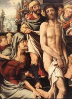
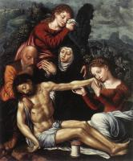

| Virgin and Child beneath a Vine
1528-29
|
| Christ Carrying the Cross
1533
| |
 | Vanitas
1535-40
|
 | The Prodigal Son
1536
|
 | Judith
1540
|
 | St Jerome
1543
|
 | The Calling of Saint Matthew
1548
|
 | St Jerome
1548
|
 | Maria Magdalene with a lute
1550
|
 | Tobias Restores his Father’s Sight
1555
|
 | The Parable of the Unmerciful Servant
1556
|
|  | Christ Mocked
1560
|
|  | The Lamentation of Christ
|
 | Virgin and Child
|
 | Isaac Blessing Jacob
|
 | The Descent from the Cross
|
 | St Jerome
|